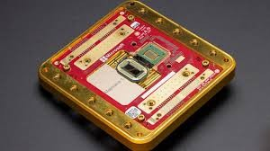
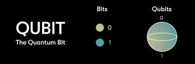
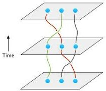
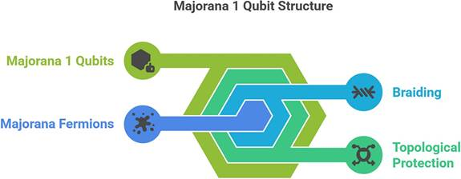

- Trisha Rajesh BTech IT (2022115132)
Quantum computing is no longer a far-off dream, it’s a rapidly growing field with big players like Google, IBM, and Microsoft competing to build the most powerful machines ever made. But while most companies are focusing on superconducting or trapped-ion qubits, Microsoft is taking a very different route — one that involves a particle so rare, it was only recently observed: the Majorana zero mode.
In 2024, Microsoft announced a breakthrough: the Majorana 1 quantum chip — the first hardware platform to demonstrate a building block of what’s called topological quantum computing. Unlike typical
quantum chips, which are error-prone and fragile, the Majorana 1 aims to be inherently more stable, scalable, and reliable.
Back in the 1930s, Italian physicist Ettore Majorana predicted a bizarre kind of particle — one that is its own antiparticle. While most particles have opposites (like electrons and positrons oh and how can i forget about our own thoughts!), Majorana particles are perfectly symmetrical.
Fast forward a century later, and scientists have found strong evidence of these “Majorana zero modes” in special materials — particularly in superconducting nanowires.
|  |
A topological qubit is a special kind of qubit designed to be naturally protected from errors, by storing information in the geometry (or topology) of a quantum system and not just in the state of a particle.
Instead of flipping qubits between 0 and 1, topological quantum computers braid quantum information around pairs of Majorana particles. This braiding is extremely hard to mess up, making it more resilient to the kinds of noise that destroy other quantum systems.
In 2024, Microsoft unveiled the Majorana 1 chip, and for the first time, demonstrated topological qubits built from Majorana zero modes. This wasn’t just a simulation or lab curiosity — this was hardware that could be cooled to near absolute zero and used to isolate and manipulate these special particles.
Microsoft is working on reducing errors at the physics level, making large-scale quantum computing simpler down the road.
● Fewer qubits needed to do useful work is like chatGPT'ing your syllabus and studying fast when your friends are 2 pages deep into the 700 page textbook
● Simplified error correction. Imagine writing 1000 lines of codes without having to spend the next 10 hours debugging, (now stop imagining!)
● Topological protection (the real deal) the chip opens the door to topological quantum computing, which has been a theoretical dream for decades.)
● Longer coherence times, which means more operations before the qubit “forgets” its state.
Of course! Just like our qubits, Majorana Particles have their own disadvantages too :
1. It's Not Yet a Full Quantum Computer
● Majorana 1 is a prototype, not a complete system.
● It demonstrates that Majorana zero modes can exist and be manipulated, but we don’t yet have working topological qubits performing full quantum logic operations.
2. Hard to Create and Maintain Majorana Modes
● Majorana zero modes only appear under very specific conditions:
○ Ultra-low temperatures (near absolute zero)
○ Precise semiconductor-superconductor hybrid materials
○ Clean, low-noise environments
● These requirements make the chip expensive and complex to fabricate and operate.
|  |
Microsoft’s Majorana 1 chip is not just a cool physics experiment — it’s a possible paradigm shift. While we’re still in the early days of quantum computing, Majorana 1 gives us a glimpse of a future
where quantum hardware is not just powerful, but reliable and robust.
By choosing a path no other major company has taken, Microsoft is betting on topological qubits as the foundation for a fault-tolerant, scalable quantum future. It’s not the fastest route, but if it works, it could be the most sustainable.
In a field where noise and fragility are the enemy, Microsoft’s approach says: "Let’s build qubits that don’t break in the first place."
References : https://en.wikipedia.org/wiki/Majorana_1?utm_source=chatgpt.co m
https://sciencebusiness.net/network-updates/microsofts-majorana
-1-chip-carves-new-path-quantum-computing?utm_source=chatgpt
https://timesofindia.indiatimes.com/technology/tech-news/micros oft-unveils-majorana-1-quantum-computing-chip-read-what-ceo-sa tya-nadella-has-to-say/articleshow/118416648.cms?utm_source=c hatgpt.com